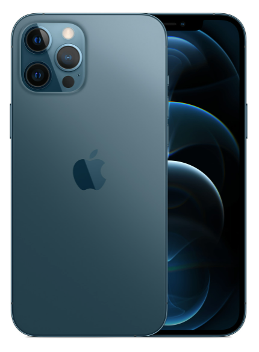

Apple Iphone 12 Pro Max 256GB Product Pacific Blue Sale

Тройная камера на тыльной панели способна делать изумительные фотографии отдаленных объектов благодаря 2.5-кратному оптическому зуму. Съемка в условиях слабого освещения сказывается на четкости картинки, хотя специальный ночной режим может существенно улучшить ситуацию. Этому также сильно способствует сканер LiDAR, который тоже находится с обратной стороны. Лицевая камера получила возможность снимать ночью – в приложении появился соответствующий режим.
Основные характеристики
Размеры - 78.09 x 160.84 x 7.39 мм
Вес - 228 г
SoC - Apple A14 Bionic.
Количество ядер - 4.
Встроенная память - 256 ГБ
Экран - 6.7 in, OLED, 1284 x 2778 пикселей, 24 бит
iOS — максимально надёжная мобильная операционная система с невероятными возможностями персонализации, мощными функциями и передовыми средствами обеспечения конфиденциальности.